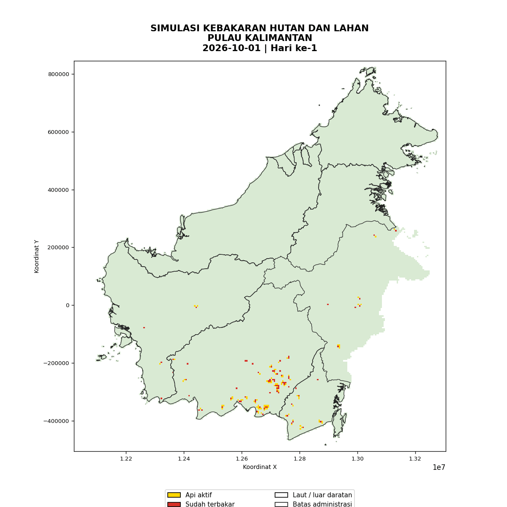

Memuat...
Data Otomatis Folder /data
Memuat...
Kalkulasi Spasial Poligon
WASPADA (82%)
Monitoring Kelembapan
18 km/j (NW)
Streaming Cuaca Real-Time
Peta Monitoring Kebakaran Real-Time & Raster
Visualisasi spasial GeoJSON & GeoTIFF otomatis dari folder /data
Simulasi Pemodelan Penyebaran Api (CA-BM)
Hasil pemodelan adveksi 30 hari diputar langsung dari folder /assets
SIMULASI CA-BM

Skenario: Animasi CA-BM 30 Hari
Status: Standby
Grafik Analytics & Indikator Harian
Tren kenaikan hotspot & hasil simulasi dari file CSV /data
Live Weather Stream & Ringkasan Simulasi
Ringkasan otomatis diproses langsung dari file CSV /data
Kelembapan Udara
45%
Potensi Kering: Tinggi
Curah Hujan (24h)
0.2 mm
Kategori: Sangat Rendah
Arah & Kecepatan Angin
NW / 18 km/jam
Mendorong api ke Tenggara
| METRIK SIMULASI |
NILAI HASIL |
KETERANGAN DATA |
| Memuat data dari folder /data... |